數據處理生命週期與架構
在 AI 的世界裡，有一句名言：「垃圾進，垃圾出 (Garbage In, Garbage Out, GIGO)」。無論你的模型多麼先進，如果餵給它的資料品質低劣，結果也將毫無價值。本章將探討資料如何從原始狀態，經過層層處理，最終變成模型可用的燃料。
資料類型與儲存 (Data Types & Storage)
在建立資料管道之前，我們必須先了解手上有什麼樣的資料，以及該把它存在哪裡。
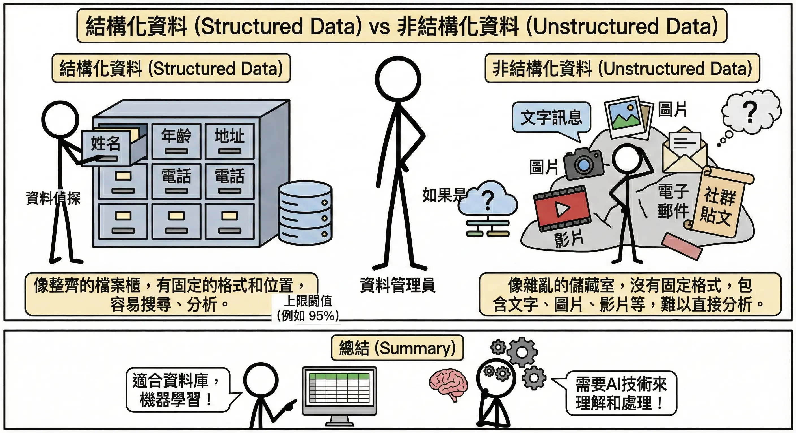
結構化資料 (Structured Data)
- 定義：高度組織化，有固定的格式與長度。通常以「表格」形式呈現（行與列）。
- 例子：Excel 報表、銀行交易紀錄、客戶資料表 (Name, Age, Phone)。
- 儲存方式：關聯式資料庫 (RDB, Relational Database)。
- SQL (Structured Query Language)：用於查詢和管理資料的標準語言。
- 特性：強調 ACID（原子性、一致性、隔離性、持久性），確保交易絕對準確。
- 常見工具：MySQL, PostgreSQL, Oracle, Microsoft SQL Server。
非結構化資料 (Unstructured Data)
- 定義：沒有固定格式，電腦難以直接解析。佔了全世界資料的 80% 以上。
- 例子：圖片、影片、音訊、PDF 文件、社群貼文、電子郵件內容。
- 儲存方式：NoSQL 資料庫 或 物件儲存 (Object Storage)。
- 特性：靈活、擴充性強 (Scalable)，通常不保證強一致性 (BASE)。
- 常見工具：
- 物件儲存：Amazon S3, Google Cloud Storage (存圖片、影片)。
- NoSQL：MongoDB (存文件), Redis (存快取), Cassandra (存大量日誌)。
半結構化資料 (Semi-structured Data)
- 定義：介於兩者之間。沒有嚴格的表格架構，但有標籤 (Tags) 或鍵值 (Keys) 來描述資料層次。
- 例子：JSON (API 回傳格式), XML, HTML, Log 檔。
- 儲存方式：通常存於 NoSQL (Document DB) 如 MongoDB，或現代 RDB 的 JSON 欄位中。
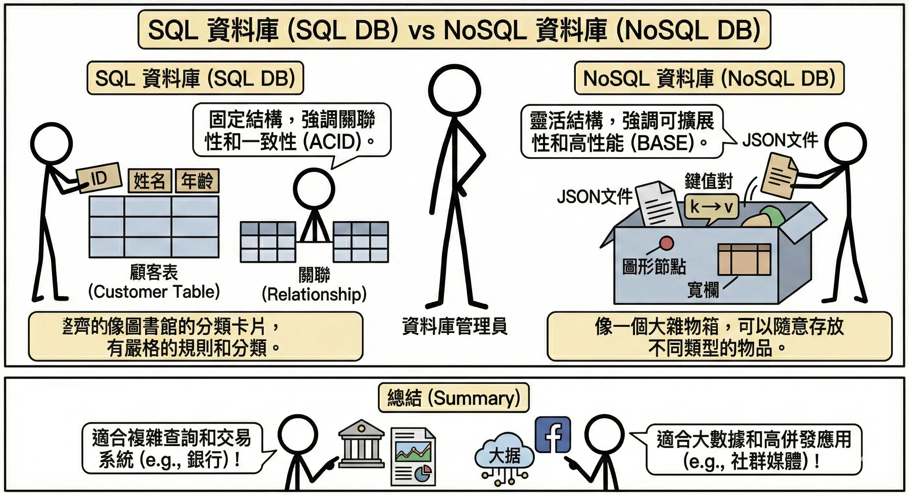
資料管道 (Data Pipeline)
資料管道就像是城市的供水系統。水源（原始資料）可能來自水庫、河流或地下水，必須經過過濾、消毒、輸送（處理過程），最後才能從家裡的水龍頭流出乾淨的自來水（可用資料）。
ETL (Extract-Transform-Load) 架構
這是最傳統也最常見的資料處理流程，特別適用於結構化資料（如資料庫表格）。
- 資料擷取 (Extract)：從各種來源（資料庫、API、檔案）收集資料。就像去市場買菜。
- 資料轉換 (Transform)：清洗、格式化、計算衍生欄位。就像在廚房備料（洗菜、切肉、醃製）。這是最耗時的步驟。
- 資料載入 (Load)：將處理好的資料存入目標系統（通常是資料倉儲 Data Warehouse）。就像將煮好的菜端上桌。
優缺點分析：
- 優點 (Pros)：
- 資料品質高：進入倉儲的資料都經過清洗和驗證，乾淨且格式統一。
- 查詢效能好：資料倉儲通常針對讀取優化，分析速度快。
- 節省儲存空間：只儲存需要的、處理過的資料。
- 缺點 (Cons)：
- 靈活性低：如果分析需求改變（例如想看原始資料），需要重新設計轉換流程。
- 延遲較高：必須等所有轉換步驟完成才能使用資料，不適合即時分析。
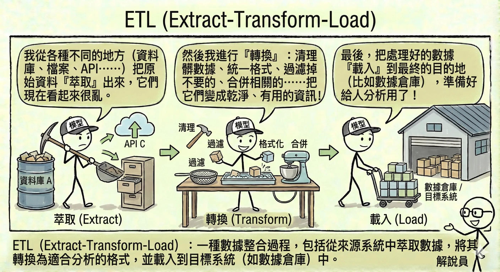
ELT (Extract-Load-Transform) 架構與資料湖 (Data Lake)
隨著大數據 (Big Data) 的興起，資料量大到無法先處理再儲存，或者資料是非結構化的（如日誌、圖片、影片），ELT 架構應運而生。
- 流程：先把所有資料（不管髒不髒）全部抓進來（Extract & Load），存放在一個巨大的儲存庫中，稱為資料湖 (Data Lake)。等到需要分析時，再進行轉換 (Transform)。
- 類比：這就像搬家。先把舊家的東西全部裝箱搬到新家（Load），等到要用某個東西時，再打開箱子整理（Transform）。
優缺點分析：
- 優點 (Pros)：
- 極高靈活性：保留了所有原始資料，隨時可以根據新需求進行不同的轉換分析。
- 載入速度快：不需要等待繁重的轉換過程，資料能快速進入系統。
- 支援非結構化資料：圖片、影片、日誌都可以先丟進去再說。
- 缺點 (Cons)：
- 資料治理困難：如果沒有妥善管理，資料湖很容易變成「資料沼澤 (Data Swamp)」，充滿垃圾資料。
- 查詢效能較差：因為資料未經優化，查詢時可能需要即時處理大量原始數據。
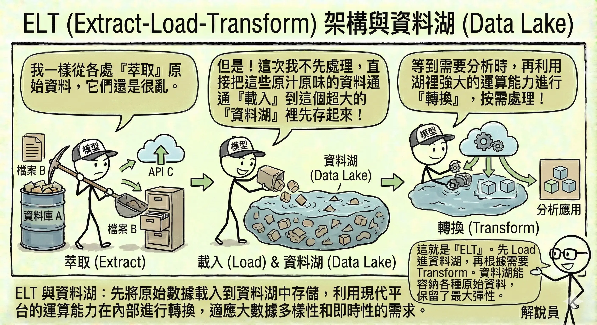
批次處理 vs. 串流處理
- 批次處理 (Batch Processing)：累積一段時間的資料後，一次性處理。
- 類比：公車。要等到時刻表到了或人坐滿了才發車。
- 優點 (Pros)：
- 技術成熟：工具多，容易實作與維護。
- 計算效率高：一次處理大量資料，平均成本低。
- 缺點 (Cons)：
- 資料延遲：無法看到最新的數據，通常有數小時到數天的落差。
- 適用：日報表、月結算、不需要即時性的分析。
- 串流處理 (Streaming Processing)：資料一產生就立刻處理。
- 類比：計程車。隨叫隨走，來一個載一個。
- 優點 (Pros)：
- 即時性：能立刻對新事件做出反應（如阻擋盜刷）。
- 平滑負載：資料持續流入處理，不會像批次處理那樣在特定時間出現巨大的運算高峰。
- 缺點 (Cons)：
- 技術複雜：需要處理資料亂序、遺失、重複等問題，開發難度高。
- 成本較高：需要 24 小時運行的基礎設施。
- 適用：即時詐欺偵測、股市交易監控、即時推薦系統。
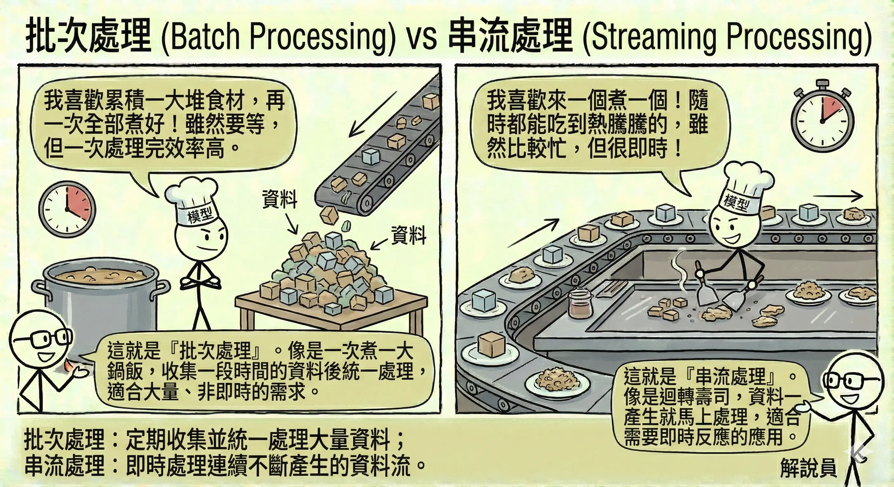
探索性資料分析 (Exploratory Data Analysis, EDA)
在正式建模之前，我們必須先「認識」資料。探索性資料分析 (Exploratory Data Analysis, EDA) 就像是相親，你需要透過各種方式了解對方的個性、習慣和背景。
數值型 vs. 類別型資料 (Numerical vs. Categorical Data)
在資料科學中，區分資料的類型至關重要，因為不同的演算法適用於不同類型的資料。
1. 數值型資料 (Numerical Data)
代表數量或大小的資料，可以進行數學運算（加減乘除）。
- 連續型 (Continuous)：可以取任意小數點的值。例如：身高 (175.5 cm)、溫度 (26.8°C)、股價。
- 離散型 (Discrete)：只能取整數值。例如：小孩的人數 (1, 2, 3)、網頁點擊次數。
2. 類別型資料 (Categorical Data)
代表特徵或群組的資料，通常是文字或代碼，無法直接進行數學運算。
- 名目型 (Nominal)：沒有順序關係。例如：血型 (A, B, O, AB)、顏色 (紅, 藍, 綠)、城市 (台北, 東京, 紐約)。
- 順序型 (Ordinal)：有順序或等級關係，但間距不一定相等。例如：滿意度 (非常滿意 > 滿意 > 普通 > 不滿意)、衣服尺寸 (S < M < L < XL)。
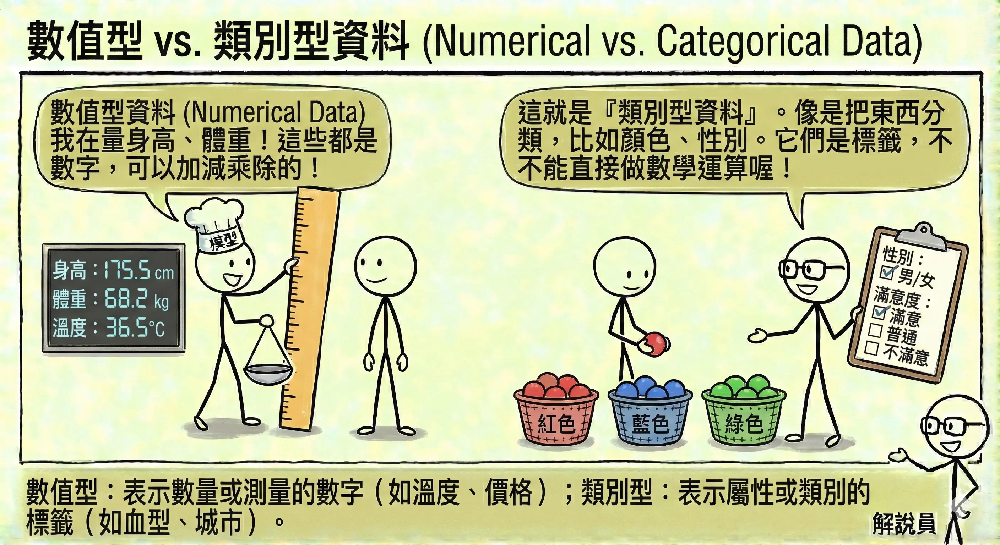
為什麼不能輕易轉換？
雖然電腦最終只看得懂數字，但我們不能隨意將類別轉為數字，或將數字轉為類別，這會造成模型誤解：
- 類別轉數值的陷阱：
- 如果將「顏色」編碼為：紅=1, 綠=2, 藍=3。
- 誤解：模型會以為「藍色 (3) 大於 紅色 (1)」，或者「紅色 (1) + 綠色 (2) = 藍色 (3)」。這在數學上是荒謬的。
- 解法：對於類別型資料，應使用獨熱編碼 (One-Hot Encoding)，將每個顏色變成獨立的欄位（是紅色嗎？是綠色嗎？）。
- 數值轉類別的代價：
- 如果將「年齡」轉為「年齡層」（0-18歲, 19-35歲…）。
- 資訊流失：19 歲和 35 歲被視為完全一樣，失去了細微的差異。這稱為離散化 (Discretization)，雖然有助於簡化問題，但會犧牲精確度。
統計摘要 (Descriptive Statistics)
用數字來描述資料的整體樣貌，這是了解資料的第一步。
- 集中趨勢 (Central Tendency)：尋找資料的「中心」，代表大多數資料落在哪裡。
- 平均數 (Mean)：所有數值加總除以個數。
- 缺點：非常容易受極端值 (Outliers) 影響。
- 中位數 (Median)：將資料由小到大排列，位於正中間的那個數（第 50 百分位數）。
- 優點：不受極端值影響，更能代表「一般人」的水準。在房價或薪資統計中，中位數通常比平均數更有參考價值。
- 眾數 (Mode)：出現次數最多的數值。適用於類別資料（如「最熱賣的飲料」）。
實例演練：薪資統計
假設一間新創公司有 5 位員工，月薪（萬元）分別為：
3, 3, 4, 5, 100（最後一位是老闆）。- 平均數：(3+3+4+5+100) / 5 = 23 萬。
- 解讀：平均薪資 23 萬，聽起來這家公司待遇超好？但其實 4 個人都領不到 6 萬。這就是平均數被極端值（老闆的 100 萬）拉高的假象。
- 中位數：排序後是
3, 3, [4], 5, 100。中位數是 4 萬。- 解讀：4 萬比較接近大多數員工的真實感受。
- 眾數：3 萬（出現 2 次，最多）。
- 解讀：領 3 萬的人最多。
- 平均數 (Mean)：所有數值加總除以個數。
- 離散程度 (Dispersion)：資料分佈得有多「散」，代表資料的波動性或不確定性。
- 標準差 (Standard Deviation, SD)：數值與平均數的平均距離。
- 公式：\[ s = \sqrt{\frac{\sum_{i=1}^{n} (x_i - \bar{x})^2}{n-1}} \]
- 注意 (貝塞爾校正)：為什麼除以 n-1 而不是 n？
- 當我們只擁有樣本 (Sample) 資料時，用 n-1 能提供對母體標準差更準確的不偏估計 (Unbiased Estimate)。
- 如果是計算母體 (Population) 標準差（擁有全部資料），則除以 n。
- 意義：SD 越小，代表資料越集中（品質穩定）；SD 越大，代表資料越參差不齊（風險高）。
- 例子：兩個班級平均分都是 80 分。A 班大家都在 75-85 分之間（SD 小）；B 班有人考 100 也有人考 60（SD 大）。
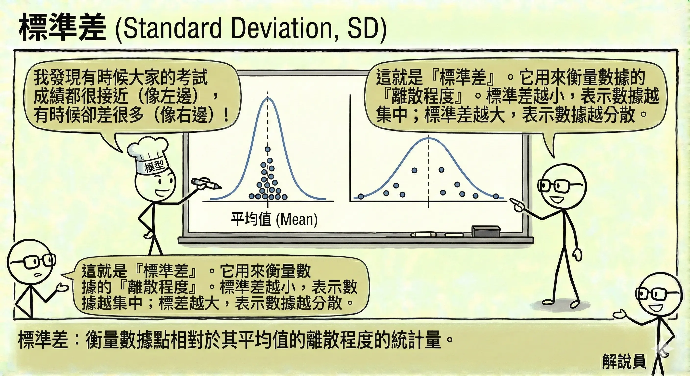
- 四分位數 (Quartiles)：將資料由小到大切成四等份的切點。
- Q1 (第 1 四分位數)：贏過 25% 的人。
- Q2 (第 2 四分位數)：即中位數，贏過 50% 的人。
- Q3 (第 3 四分位數)：贏過 75% 的人。
- 四分位距 (IQR)：代表中間 50% 資料的範圍，常用於偵測離群值。
- 公式：IQR = Q_3 - Q_1
- 標準差 (Standard Deviation, SD)：數值與平均數的平均距離。
- 分佈形狀 (Distribution Shape)：
- 偏態 (Skewness)：資料分佈是否對稱。
- 公式：\[ Skewness = \frac{\sum_{i=1}^{n} (x_i - \bar{x})^3}{n \times s^3} \]
- 變數說明：
- xi：第 i 個資料點。
- \(\bar{x}\)：平均數。
- n：資料總數。
- s：標準差。
- 右偏 (Right Skewed / Positive Skew)：長尾巴在右邊（大數值方向）。代表少數極大值拉高了平均數。例如：所得分佈（少數富人）、房價。此時 平均數 > 中位數。
- 左偏 (Left Skewed / Negative Skew)：長尾巴在左邊（小數值方向）。例如：考試成績（題目很簡單，大多數人考高分，少數人考低分）。此時 平均數 < 中位數。
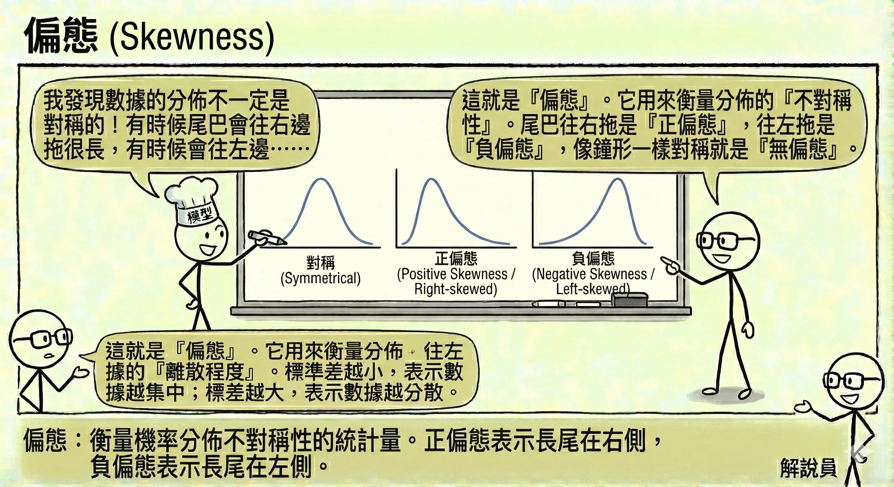
- 峰度 (Kurtosis)：資料分佈的「尖銳」程度。峰度高代表資料集中在中心，且有較厚的尾部（容易出現極端值）。
- 公式：\[ Kurtosis = \frac{\sum_{i=1}^{n} (x_i - \bar{x})^4}{n \times s^4} - 3 \] (超額峰度)
- 偏態 (Skewness)：資料分佈是否對稱。
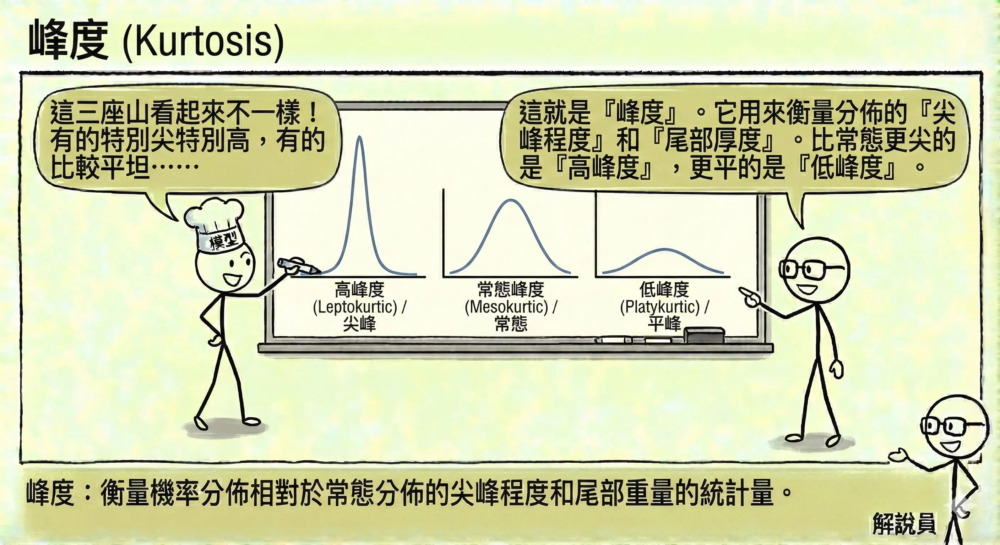
資料視覺化決策邏輯
一張圖勝過千言萬語，但選錯圖表會造成誤導。
散佈圖 (Scatter Plot)：看兩個變數之間的關聯（例如：身高 vs. 體重）。
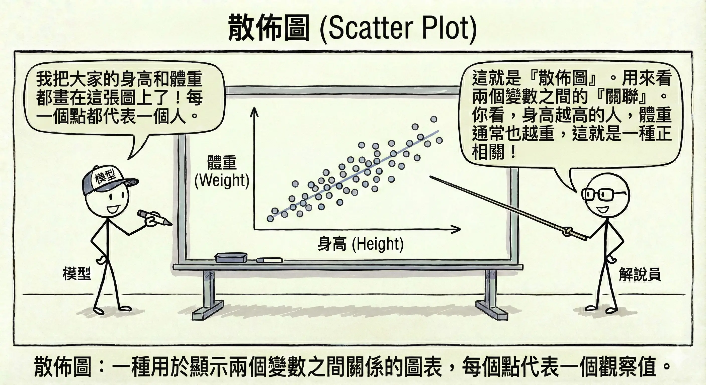
圓餅圖 (Pie Chart)：顯示各類別佔整體的比例（例如：市佔率）。
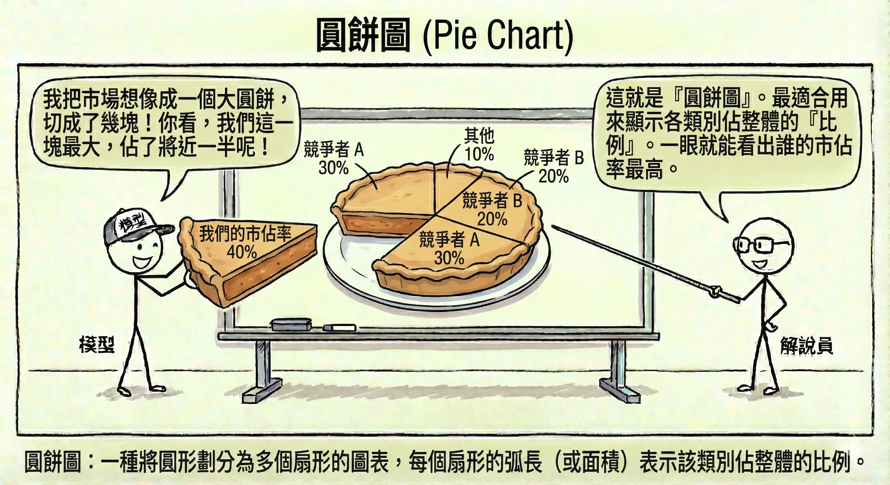
折線圖 (Line Chart)：看時間趨勢（例如：股價走勢、氣溫變化）。
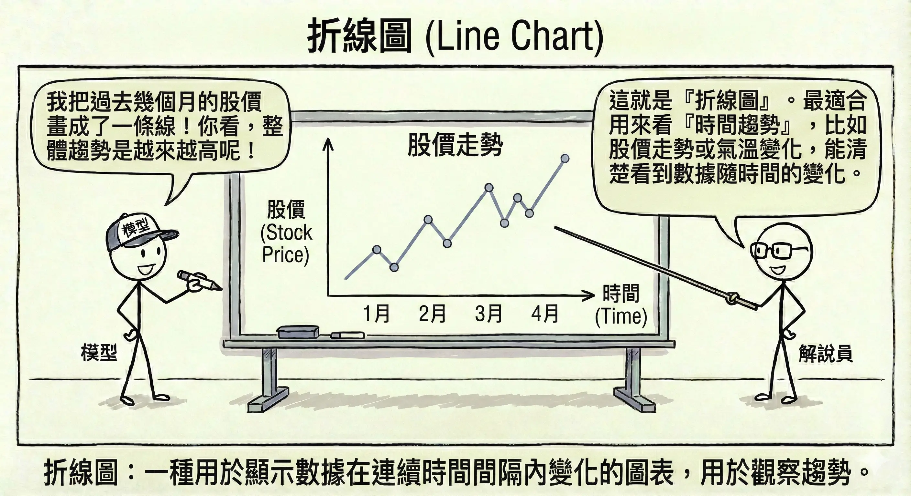
直方圖 (Histogram)：看單一變數的分佈情況（例如：全校學生的成績分佈）。
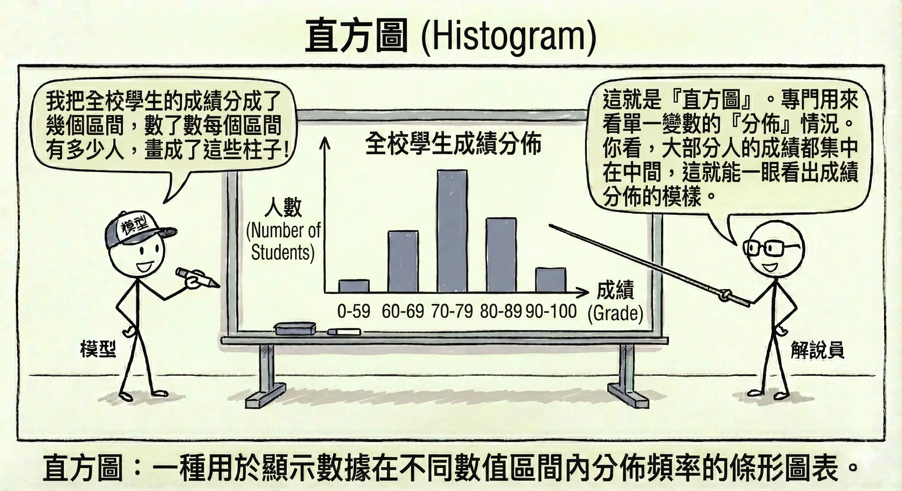
長條圖 (Bar Chart)：比較不同類別的大小（例如：各部門的業績比較）。
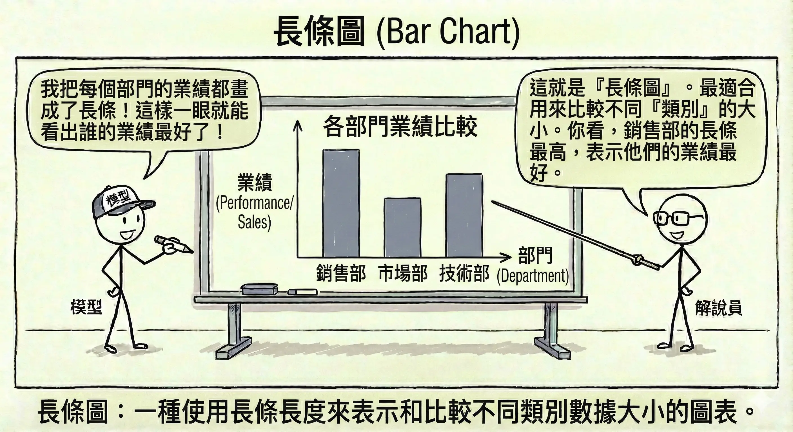
熱圖 (Heatmap)：用顏色深淺表示數值大小，常用於顯示相關係數矩陣（哪些變數連動性高）。
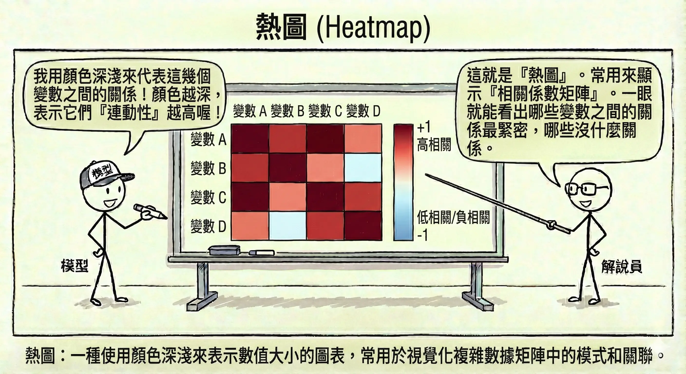
盒鬚圖 (Box Plot)：快速看出資料的分佈範圍、中位數以及離群值。
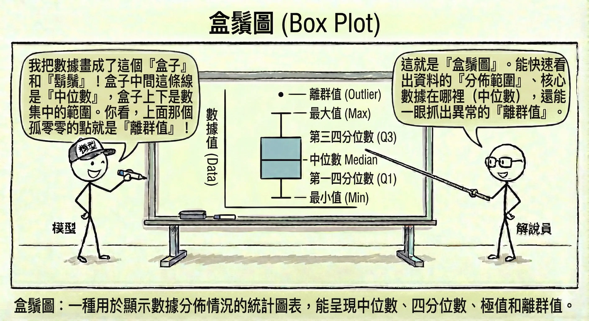
資料清理與品質管理
現實世界的資料往往是髒亂的。資料清理 (Data Cleaning) 通常佔據資料科學家 80% 的時間。
缺失值處理 (Missing Values)
資料中有空格（Null 或 NaN）是常態。這就像拼圖缺了幾片，我們必須決定怎麼處理。
刪除法 (Deletion)：
- 列刪除 (Listwise Deletion)：只要這一列資料有缺，整列丟掉。
- 優點：簡單快速。
- 缺點：如果資料量本來就不多，會浪費寶貴的資訊。
- 欄刪除 (Dropping Features)：如果某個欄位（如「備註」）缺損率高達 90%，這個欄位可能就沒有參考價值，直接移除。
- 列刪除 (Listwise Deletion)：只要這一列資料有缺，整列丟掉。
插補法 (Imputation)：用「猜」的來填補空格。
- 統計值填補：
- 數值型：用平均數 (Mean)（容易受極端值影響）或中位數 (Median)（較穩健）填補。
- 類別型：用眾數 (Mode)（出現最多次的類別）填補。
- 模型預測填補：將缺失的欄位當作「目標」，其他欄位當作「特徵」，訓練一個模型（如 KNN 或迴歸）來預測缺失值。這是最精準但也最耗算力的方法。
插補效果比較表： 假設我們有以下員工資料，其中 Bob 的薪資缺失：
員工 部門 年資 薪資 (萬元) Alice Sales 2 40 Bob Sales 3 ? Charlie Sales 5 60 David IT 2 80 Eve IT 3 90 插補方法 填補值 計算邏輯 優缺點 平均數 (Mean) 67.5 (40+60+80+90)/4 簡單，但被 IT 部門的高薪拉高，不符合 Bob 的 Sales 身分。 中位數 (Median) 70 40, 60, 80, 90 的中間值 比平均數穩健，但仍未考慮部門差異。 分群平均 (Group Mean) 50 只算 Sales 部門的平均 (40+60)/2 考慮了部門特徵，比全體平均更準確。 KNN (K-近鄰) 45-55 找跟 Bob 最像的人（Sales, 年資 3）。Alice (2年) 和 Charlie (5年) 是鄰居。 最精準，利用了「年資」與「部門」的綜合資訊。 - 統計值填補：
異常值/離群值處理 (Outliers Handling)
有些資料點明顯與眾不同，例如身高 300 公分的人，或是年齡 200 歲。這些點可能是錯誤，也可能是極具價值的特殊案例（如詐欺交易）。
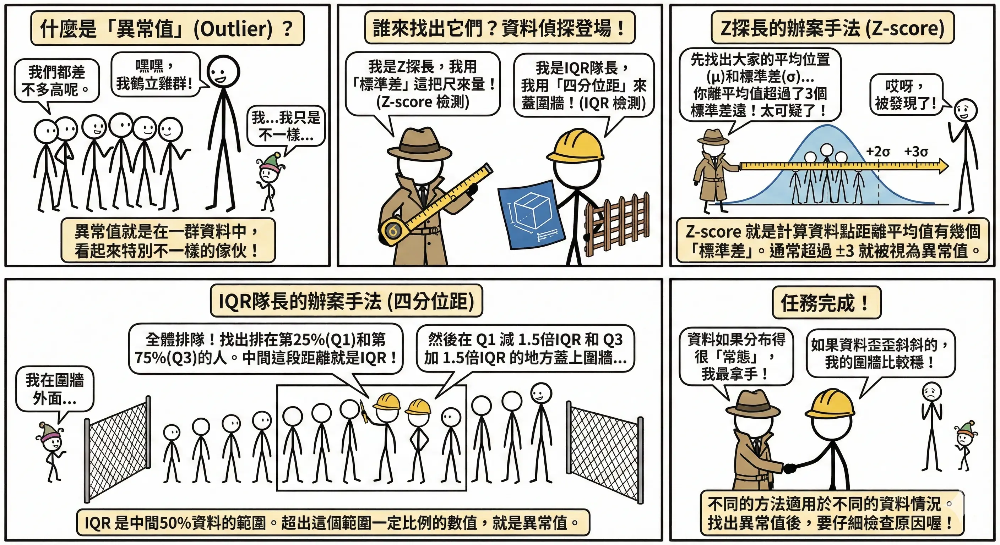
- 偵測方法：
- Z-score 檢測：假設資料呈常態分佈，超過平均數 ±3 個標準差 (3𝛔) 的數值通常被視為異常。
- 四分位距 (IQR) 檢測：利用盒鬚圖的概念。計算 IQR = Q3 - Q1。
- 上限：Q3 + 1.5 * IQR
- 下限：Q1 - 1.5 * IQR
- 超過上下限的點即為離群值。
- 處理方式：
- 修正或刪除：如果是明顯的輸入錯誤（如年齡 -5 歲），應直接修正或刪除。
- 轉換 (Transformation)：使用對數轉換 (Log Transformation)（例如取 log(x)）來壓縮數值範圍，讓極端值不再那麼突兀，減少對模型的干擾。
- 蓋帽法 (Winsorizing)：將超過特定百分位數（如 99%）的值，強制設定為該百分位數的值（例如所有超過 1000 的數都設為 1000）。
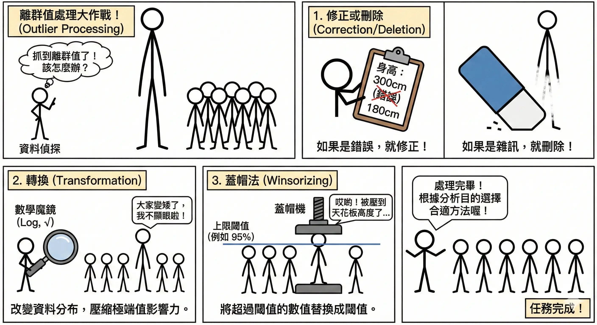
數據一致性處理 (Data Consistency)
資料來源不同，格式往往五花八門。這就像聯合國開會，大家得先講好用同一種語言。
- 格式標準化：
- 日期：統一將 “2023/1/1”, “01-01-2023”, “Jan 1st, 23” 轉換為
YYYY-MM-DD格式。 - 大小寫：將 “Apple”, “apple”, “APPLE” 統一轉為小寫 “apple”。
- 單位：將不同欄位或來源的計量單位（如「公尺」vs「英呎」、「台斤」vs「公斤」、「美金」vs「台幣」）統一換算為同一標準，避免數值比較失準。
- 日期：統一將 “2023/1/1”, “01-01-2023”, “Jan 1st, 23” 轉換為
- 語意合併：
- 將 “Taipei”, “Taipei City”, “TP”, “台北市” 統一映射為 “Taipei”。
- 去重 (Deduplication)：
- 檢查是否有完全重複的資料列，或者「ID 相同但內容略有不同」的衝突資料，並依據時間戳記保留最新的一筆。
資料匿名化與隱私保護 (PII 處理)
在處理涉及個人識別資訊 (PII, Personally Identifiable Information)（如姓名、身分證號、電話、地址）的資料時，必須嚴格遵守法規（如歐盟 GDPR、台灣《個人資料保護法》）。
個資法合規關鍵 (Compliance Requirements)：
- 告知與同意 (Notice & Consent)：蒐集資料前，必須明確告知使用者蒐集目的、類別及利用期間，並取得當事人同意。
- 目的拘束 (Purpose Limitation)：資料只能用於當初聲明的特定目的，不得隨意挪作他用（例如：為了「配送商品」蒐集的地址，不能拿去「寄送廣告」）。
- 資料最小化 (Data Minimization)：只蒐集「必要」的資料。如果分析不需要身分證號，就不要蒐集。
- 安全維護措施 (Security Measures)：企業有義務採取適當的技術與組織措施（如加密、存取控制）來防止資料外洩。
- 當事人權利 (Data Subject Rights)：使用者有權要求查詢、更正、或刪除其個人資料（被遺忘權）。
為了符合上述要求，常見的技術手段包括：
- 遮罩 (Masking)：隱藏部分資訊。
- 姓名：“王大明” → “王O明”
- 電話：“0912-345-678” → “0912--”
- 泛化 (Generalization)：降低資料的精確度，使其無法識別特定個人，但仍保有統計意義。
- 年齡：“25 歲” → “20-30 歲區間”
- 地址：“台北市信義區信義路五段 7 號” → “台北市信義區”
- 假名化 (Pseudonymization)：用隨機生成的代碼（Token）取代真實 ID。只有擁有對照表的人才能還原，比單純刪除更具可追溯性。
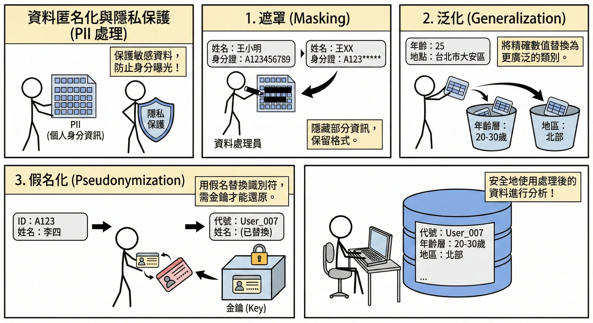
本章總結與考點提示
核心概念回顧
本章重點在於資料進入模型前的準備工作，這是 AI 專案成敗的關鍵。
- 資料架構：
- ETL：先處理再存（傳統，結構化資料）。
- ELT：先存再處理（大數據，資料湖）。
- 資料分析 (EDA)：
- 集中趨勢：平均數（怕極端值）、中位數（穩健）、眾數。
- 離散程度：標準差（波動大小）、IQR（四分位距）。
- 分佈形狀：偏態（左偏/右偏）、峰度。
- 資料清理：
- 缺失值：刪除、插補（平均數/中位數/KNN）。
- 離群值：Z-score (>3)、IQR (1.5倍)。
- 隱私：去識別化、差分隱私。
AI 應用規劃師認證考點
常考題型與解題策略：
- 統計指標選擇題：
- 例題：「某公司薪資分佈極不平均，老闆想用哪個指標來『美化』薪資水準？」
- 解答：平均數 (Mean)。因為會被高薪者拉高。
- 例題：「想了解大多數員工的真實薪資，應看哪個指標？」
- 解答：中位數 (Median)。
- 資料處理方法題：
- 例題：「資料中有大量缺失值，且該欄位對預測很重要，該怎麼辦？」
- 解答：插補法 (Imputation)。不能直接刪除（會掉資料），也不能刪欄位（會掉特徵）。
- 例題：「如何處理年齡欄位中的 ‘200歲’？」
- 解答：視為異常值，進行修正或刪除。
- 架構比較題：
- 關鍵字：結構化資料/資料倉儲 → ETL；非結構化/大數據/資料湖 → ELT。
- 圖表選擇題：
- 比例 → 圓餅圖。
- 趨勢 → 折線圖。
- 分佈 → 直方圖。
- 關聯 → 散佈圖。
記憶口訣
- 右偏分佈：「貧富差距大」，平均數 > 中位數（被富人拉高）。
- 左偏分佈：「考試簡單」，平均數 < 中位數（被低分拉低）。
- ETL vs ELT：看「T」(Transform) 的位置。T 在中間是傳統，T 在最後是大數據。
延伸思考
- 為什麼在醫療數據中，我們通常不隨意刪除有缺失值的資料？（因為每一筆病歷都很珍貴，且缺失本身可能帶有資訊，例如病人太嚴重無法測量）。